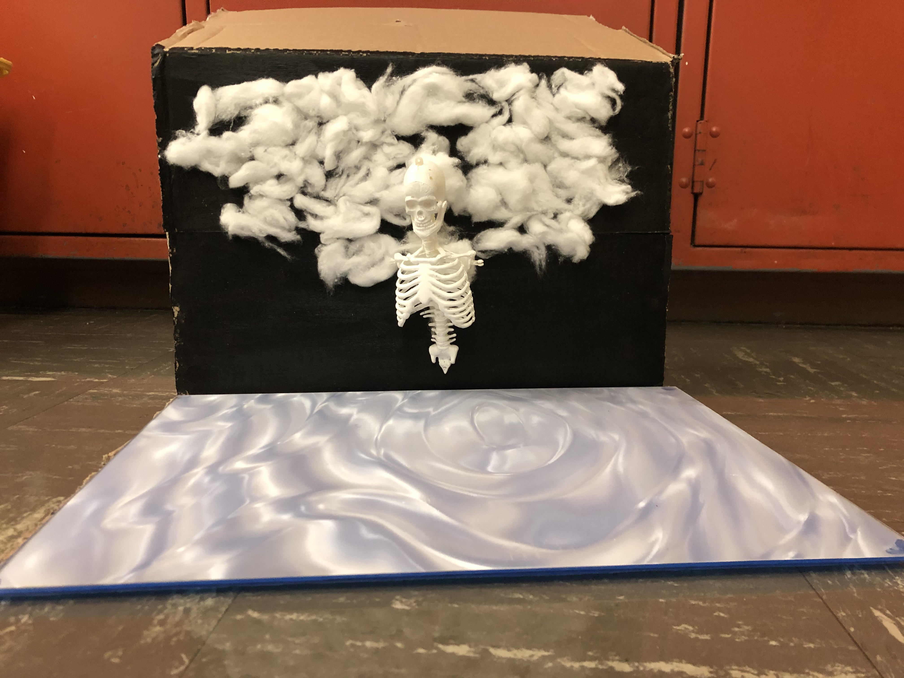
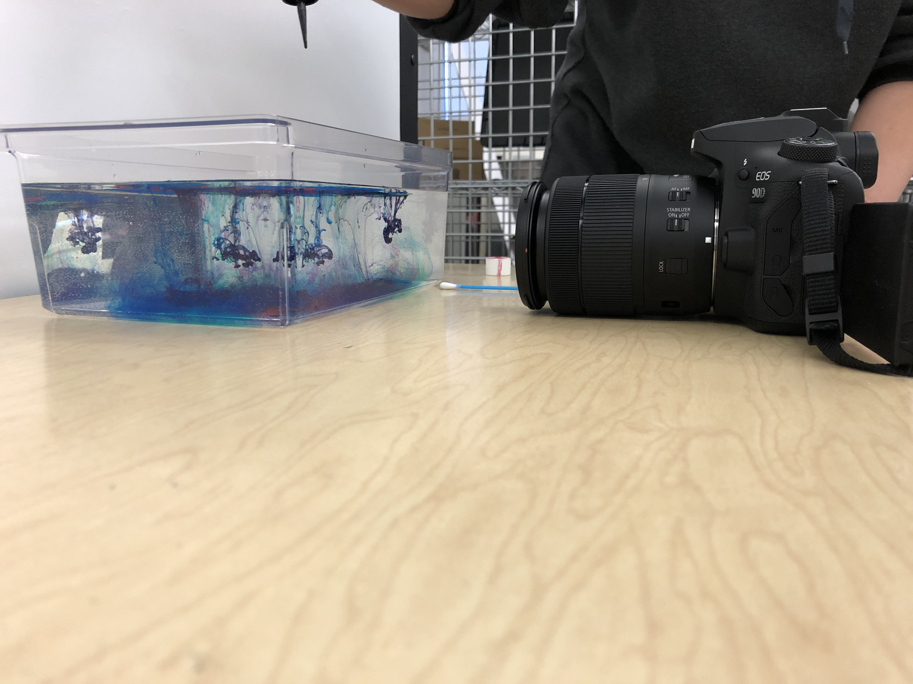

The ideas behind this piece were threefold, but we were able to find a very successful melding of them. The Skeleton with human features projected onto it was meant to represent the inner world (The skeleton) differing from the outer world (the projection of human emotion and form). The skeleton is wearing the projection as its skin, inviting a conversation about what this world projects onto us, and how we respond to it.
The cloud imagery allows us to draw the connection between the creative process and the brainstorm. The projection of different colors of ink dripping down into the water represents the undisturbed mind and the ink representing various thoughts, ideas, or emotions. Furthermore, we wanted to draw into mind the cycle of rain, through condensation, precipitation, and eventually evaporation as it relates to the creative process. The final element, the floor projection is the culmination of the creative experience. The individual droplets fall down to the surface of the water and cause ripples, much like how art precipitates from the mind of the artist and in turn affects the world around them.